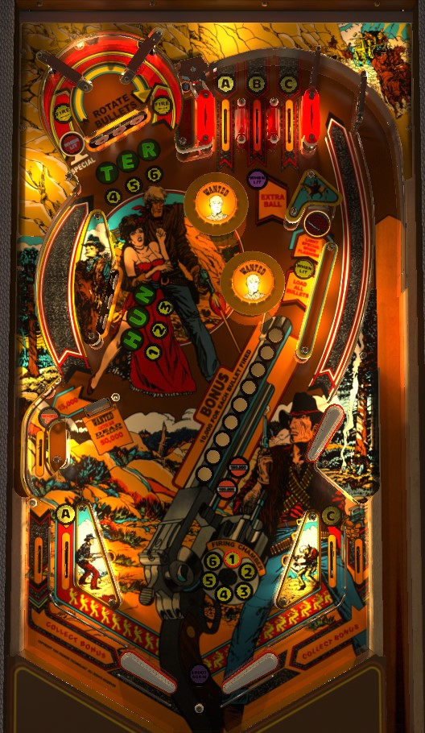

If extra balls and specials are set to be worth points, their 500,000 value is dramatically higher than all other scoring. Spell the word Hunter by hitting all 6 standup targets, then make the B top lane for extra ball. If you spell Hunter and ABC from the standup targets and top lanes, shoot the right saucer to light special, then shoot the upper left u-turn clockwise to collect it. If extra balls and specials are on, the best scoring in the game just comes from shooting top lanes all day, since nearly everything in the game scores 10,000 points and the top lanes and bumpers are one of the safest places to be.
To play for game progression, hit standup targets lit yellow to add bullets to your chamber, then make the upper left u-turn in the correct direction to fire bullets.
The below image of Bounty Hunter's playfield was taken from the VPX recreation by Bord, Siggi, et al.
Roll through an unlit lane to light it. Unlit lanes score 5,000 points, and lit lanes score 10,000. A and C can also be obtained from the left and right in lanes, while B is only available at the top lanes. Completing A-B-C lights the right saucer yellow, making it so any shot to that saucer instantly loads your entire gun chamber.
If Hunter is spelled by hitting all 6 standup targets in one ball, the B top lane will be lit for an extra ball, worth 500,000 points in competition play.
Your gun's chamber is depicted by the numbers 1-6 in a circle near the right slingshot. If a number is lit, there is currently a bullet in that position of the chamber. Hitting a standup target that is lit with a yellow number will add a bullet at that number (nothing happens if you already had a bullet at the hit number). To begin each ball, there are 2 standup targets lit for a numbered bullet at any one time: shooting the right saucer lights one more target. Bumpers and slingshots change which targets are lit to add a bullet. If A-B-C has been completed on the current ball, shooting the right saucer will also completely fill your current chamber.
The upper left u-turn shot scores 10,000 points. Shooting the u-turn clockwise will rotate the bullets in your chamber clockwise, and shooting the u-turn anticlockwise means the bullets rotate that way as well. Immediately after the bullets are rotated, if there is a bullet in position #1, it will be fired, causing that bullet to unlight and advancing the bonus. In practice, this means that the left entrance to the u-turn is lit to advance the bonus if you currently have a bullet in position 6, and the right entrance to the u-turn is lit for advance the bonus if you currently have a bullet in position 2. There are no other ways to fire bullets, and firing bullets is the only way to advance your end of ball bonus.
The intended way to shoot the upper left u-turn clockwise is to shoot the right saucer, which feeds the upper flipper, then make the shot with the upper flipper. In practice, it's not too uncommon for the pop bumpers to send a ball around the u-turn in this way, though obviously it's incredibly dangerous to attempt that on purpose.
The intended way to shoot the upper left u-turn anticlockwise is as a loop shot that goes from the lower right flipper, up the left orbit lane that goes behind the H-U-N targets, and into the u-turn from the right side, somewhat similar to the shape of an ampersand sign (&). In practice, a precise backhand shot from the lower left flipper can shoot the u-turn anticlockwise if the flippers are strong.
Hitting a standup target that is not lit green will light it green, collecting a Hunter letter. Completely unlit standup targets score 300 points. If a standup target is lit once- either green because the Hunter letter has already been collected, or yellow because you can put a bullet in the chamber at that target- it will score 5,000 points. If a standup target is lit both green and yellow, it will score 10,000 points.
Spelling Hunter lights the B top lane for an extra ball and lights the lower left side lane for 15,000 points. Spelling both A-B-C and Hunter in a single ball will cause the right saucer to start flashing. Making the saucer when flashing lights the left (clockwise) entrance of the upper left u-turn to score a Special, worth 500,000 points in competition play.
At various random times throughout the game- usually about once per ball, but occasionally slightly more frequently on the final ball of the game- a drop target will raise in front of the left orbit for about 7 seconds. Knock this drop target down to defeat Cactus Sam, the game's villain, and score 50,000 points. It appears to be completely random when Cactus Sam shows up, and his timer does not pause when the ball is in the pop bumpers, so you may not even get a chance to shoot at him when he appears. Cactus Sam can be defeated multiple times in a ball or multiple times in a game.
Always scores 10,000 points and lights one target yellow to add a bullet to the chamber. If A-B-C is completed, this saucer also puts bullets in every slot of the chamber for you. If A-B-C and Hunter have both been completed, the saucer lights the left entrance of the upper left u-turn for a Special. The saucer spits out to the right, feeding the ball to the upper flipper at a controlled speed.
Scores 1,000 points, or 15,000 when lit after Hunter is completed. It's pretty hard for the ball to end up here, either on purpose or by accident.
Bounty Hunter has a conventional in/out lane setup. The in lanes are duplicates of the A and C lanes at the top of the table and score 5,000 points, or 10,000 when lit; roll through an unlit lane to light it. The out lane switches score the current end of ball bonus, meaning if you drain down an out lane, you effectively earn double bonus- once at the out lane switch, and once when the ball actually lands in the out hole below the flippers.
There is a center peg between/below the flippers. It doesn't seem to help prevent center drains very often.
End of ball bonus consists simply of 10,000 points times the number of bullets successfully fired with shots to the upper left u-turn during the entire game. Up to 29 bullets can be fired in this way for a max bonus of 290,000 points. Firing more than 10 bullets in a single game is a pretty impressive feat, though. There is no double bonus per se, but the out lane switches and the out hole both award your bonus, so you kinda-sorta get 2x bonus by draining down any out lane.
It's been said multiple times throughout the guide but bears repeating: in competition/novelty play, extra balls and specials both score 500,000 points. Many entire games on Bounty Hunter score quite a bit less than 500,000, so if you know these settings are on, they should be the main focus of a score-based strategy.